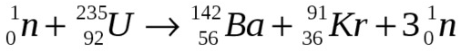

full contents of the book:
Nothing & Dot (Prolog)
Purpose
Contemplated
Entity
Consciousness
Two-Aspect (dualistic) Entity
Fourth dimension and ...
Society and Humanity
Fifth dimension and ...
Firstoccurence
Act of the “I”
The Proc.of study.the Act of "I"
The Meaning of Being
Development of Entity
The Collective Reality
the Entity Development System
Echo (Reflection)
Real Aspect of the Global I
About Worldview
Space-Time
Attitude toward Yourself
Attitude toward your body
Laziness
Fear
Hope (...for Miracle)
Adaptation
Identity of Personality
Relation [ Reason | Body ]
Free Will
Hard problem of Consciousness
Indistinguish and Identity
Matter
Gnoseology
Epistemology
Separation
to the home page
— Chapter Twelve —
————————————————————————————
————————————————————————————
THE PROCESS OF STUDYING THE ACT of "I"
The world is an Ordered Multiple Diversity, therefore it is realized through the presence of Two Abstract Foundations;
Let us consider the Origin of the World differently, consistently, but in other words. We will not adhere to the order set out in the seven points of the ‘Act of “I”’ (above in the text), the “Essence” will not change from this – because Everything arises instantly, at the moment of the realization of the Foundations of Being. After the discovery of the relative Fundamental Principles, as a result of the realization of the Foundations, the possibility arises to construct (Create), subdividing and qualifying, judging by the already obvious presence – as effectively as possible;
"Firstoccurrence" as a moment proving that before this nothing existed
We assume “something – ‘first of all’”, and we get that very “something” which forces us to assume again “something former” as the “Cause”, and this very “Cause” turns out to be the relativity of the “I" (Oneself), as a necessity, on behalf of which we intend to act, that is, to investigate, to search for the necessary Foundations, and They turn out to be the Truth;
By assuming "Nothing", we understand this simultaneously implies "Something", and in this sense - "Nothing" gives rise to a certain relativity, and vice versa - "Something" (or "Some 'I' as Dot") implies relativity to "Nothing". Looking at the "Existing World", the degree of the Absolute Influence of the "First Causes" is presented - and their possession of the Power of a Universal scale, due to natural exclusivity, since there is nothing except Themselves - which is natural and quite understandable. It is also understandable why we admire gigantism when looking at the Universe. Our entire life experience is connected with the influences of ‘Strength, Power, Energy’, etc. In fact, there is nothing special – the World (like a wave) arises without any energy expenditure, no matter how strange it may seem. The essence of any Energies lies in the Difference of Information [ ‘Wave Nature’ | and ‘Nature of Particles in Ephemeral Reality’ ]; which, when realized, transforming (as if unfolding), and unpacking ‘from one form to another’ – from a wave into real images and situations, manifests, obvious and factual in all respects, ‘Driving Force’, and this movement, in Essence, is the Mechanism of Development, an - “Efficient method of presenting information for its analysis and extraction of new experience”, i.e. namely – the Main Instrument of “Consciousness”, Guaranteeing the Existence of the “Entity”, since Development = Life (and Existence, …is equivalent);.
In one state, the information may be in a compressed and ready-to-use format, say an "egg", or, in another case, it is presented in a consistent and expanded structure necessary for research and understanding of the historical Essence of its origin, as a result of which even an ordinary "looks like egg" may not be a chicken egg :);
Being in an isolated (experimental, if that makes more sense) space, Man and any Being, being mistaken for the already known reason, attaches special importance to those facts and “things” that, on the ‘Scale of the Universe’ (on the World scale) do not have the slightest significance, and even perceive Themselves in an extremely strange role – an Observer without any role. It is too easy to get confused in the structure of the World, however, when understanding the Essence, everything turns out to be much simpler than it seemed during the study - the reason for everything is Imbalance (lack of equilibrium and inequality) and it moves towards the necessary Balance, but - only ephemeral, and only when we are interested in studying This Essence in the smallest details, that is, precisely to realize this fact, as if stretching It in width;
* * *
Even the Primary “Nothing” cannot be conceived without the corresponding relativity < to “Something” >;
Therefore, the first result caused by this relation is the infinite degree of influence in the action of the First Relativity, by means of “Something” changing the Empty Status of “Nothing” to the absolutely opposite to It – “System”, which we now call “Consciousness”, while the fact of relativity is the specific reason for determining the position of “Something”, that is, the “Abstract passive Dot” in relation to the opposite “Nothing”. We take into account that We reason about anything only in relation to Ourselves (“I” of everyone), so:
The fact of “Firstoccurrence” cannot be separated from the “I”, capable of Realizing (‘Create’) It as a Fact;
* * *
It is necessary to imagine and remember the absence of any processuality at the Moment of 'Firstoccurrence', namely - relativity itself arises through "Nothing" / and "Something" (does not happen, but rather arises). The Moment of 'Firstoccurrence' initiates the emergence of the first Fundamental Law, this is the 'Law of Harmony', that is, the Law of Maintaining the Balance of Opposites, acting in special conditions, and for two reasons:
A). In the need for fundamental grounds, balance and relativity, for the Purposes of World Security;; B). Due to the emerging relationship of opposite Unsystematic Conditions – [No_Law –> There_Is_Law].
And the second – the Law of Realization of Foundations – largely depends on the first, the Law of Harmony, but is no less important;
* * *
In other words: “Nothing” is absolutely nothing ‘« »’, having no properties, conditions, definitions, and nevertheless necessarily arising through reasoning about the Fact of “Firstoccurrence” –> is defined in relation to “Something” –> changing its status to the maximally opposite & so, “Nothing” –> is transformed into “Consciousness”, which is a passive generator of all ‘Functions of Realization of Reality’;;
In the moment under study, the “Something” initially imagined by us is minimal, of all that we able to imagine, it is the Abstract passive Dot. At the moment of “Firstoccurrence” (according to the Law of Harmony) it arises with the status opposite to “Nothing”, but, through relativity, and with its necessary preservation (taking into account the actual presence of the World), it is transformed into the opposite of one abstract dot – “Single 'I'” –> and, due to the fact of the arisen relativity [ “I” | “Consciousness” ] a multidimensional space is realized, that is, the “Single 'I'” turns out to be the “Global aspect of the Entity” –> the fundamental opposite “The Real aspect of the Global 'I'” arises –> an infinite number of “Real aspects of the Entity”, that is, “Not I”, are discovered. This “Act ‘I’ ” confirms Being of ‘I’ in all aspects, in Three Hypostases (the Trinity), acquiring the Priority of the Alive, in all conceivable and inconceivable respects;
The actual presence of an infinite number of active "Real aspects of the Entity", in relation to "Consciousness" - initiates the realization of an infinite variety of living Beings - from the position of the "Real aspect of the Global 'I' " defined as 'Not I', and the conditions of their existence, as necessity for the purpose of 'Development of the Entity' (in All Its Aspects), through the acquisition of rational experience - All this Is, and the Cause of the World, and the Whole World in total. All, that exists in the World - arises as a necessary Foundation of Being instantly, without any obstacles and exceptions. When changing the status to the opposite, everything Original here: 'less-than-insignificant' + 'less-than-minimal' is transformed, changing the empty status, as a polarity, to the maximum - in all senses, without any restrictions;
That is, here we are exploring the “Ideal and Perfect System of the World”, based on the Principles of Maintaining the Absolute Balance of Opposites – of the Great Law of Harmony (see "Act of the 'I' ", pages 85-89);
• From the less-than-insignificant “Nothing” –> arises “Consciousness” as the generator of any functions of the realization of reality [“Nothing” –> “Everything”] here it should be understood as Potentially Everything i.e. implying anything (All) infinite – as a Function;
• From the minimum possible – One Abstract Dot –> the “Great Single 'I' ” emerges as the “Global aspect of the Entity” [from the minimum –> to the maximum];
• “The Presence of the Entity” initiates the realization of the necessary ‘Place’ –> “Consciousness” realizes a "Space" without limitations, of a potentially infinite degree of dimensionality, that is, according to the Status of the “Global aspect of the Entity” –> the direct opposite of the “Global aspect of the Entity” arises in the conditions of reality, i.e. the “Real aspect of the Global 'I' ” –> which is determined by the infinite number of “Not I” – with the emergence of an infinite number of 'Real aspects of the Entity';
• In the absence of conditions –> an infinite number of conditions necessary for life, corresponding to them, arise –> a potentially infinite number of “I”s are realized –> their bodily shells, corresponding to nature and their habitat, are realized –> the World arises already populated, comfortable and beautiful, in a ready-made form – in which we see It right now (and, of course, We are Grateful);
All of this arises at once. "Firstoccurrence" has no dependence - is not an extended process (only a foundation, in fact). The essence of the "Foundation of Being 'I' ", which is actively supported in the conditions of reality - by infinite number of those seeking their Own Foundation, thirsting for Truth right now, it is Eternal interest & process - was and will always be;
Of course, we, who are in this audience, are fully aware of how few people will understand the System, which is complex to even imagine. But it is only for those (very few), who realy intend to understand it. They are here, we are incredibly glad. The topic is complex, many do not understand the principles, and the question arises: -How can it be that “everything can come into being”? In short, it is like this: -“Let there be light. And there was light” (B.1.2), but this is not a joke at all. If you understand the mechanism of contemplation very well, then everything else comes together almost “by itself”, you just need to think about it ( …agere nunc );
It is very important to understand the ‘Power of the transformation of “Nothing”’. The better you imagine this
We hope that this explanation will help understanding: That is, the Degree of insignificance of "Nothing" is inversely proportional to the Degree of greatness and diversity of the
However, this question is also about two fundamental Laws:
A). Law of Harmony (balance);
B). Law of Realization of Grounds (reasons).
Example of imbalance (by only one Neutron):

A very clear example. With the help of which one can fully imagine how important the restoration of balance is for the World, but it is not as total as the violation of Everything that preceded the emergence of "Consciousness" and "Entity". In this reaction, a little more than 47 kilograms of imbalanced substance is
The Law of Realization of Foundations also operates super effectively. Let us note once again that the "Entity" has no limitations and pursues only one goal - Development;
To understand the ‘Essence’, within the framework of the research text: First, it is necessary to understand the Mechanism of Contemplation, to understand the Essence of Reality differently, not as it seemed before. It is necessary to understand the ephemerality and virtuality of the World – to feel Its special functionality, from the conditions of Reality, the extraction of experience, to the flow of data of the Wave Nature. Try to best imagine and understand how effective, convenient and simple this method of implementing Reality is (It is Perfect). For a better understanding of the structure of the World, need to understand the four- and five- dimensionality, understand the Essence of the "Global aspect of the 'I' ", the Single General "Consciousness", and the "Collective Synchronous Realization of Reality". Carefully following the text, from the very beginning of our research, delve into the Essence of the presentation.
If after this simple procedure, understanding still does not come, then we recommend you to give up this activity, and choose the most preliminary course, "Dialogues of Socrates" (Plato) for example, "Discourse on the Method" (R.Descartes), "Critique of Pure Reason" (Kant), "Ethics", "Metaphysics" (Aristotle), in addition to these wonderful works, we highly recommend you to study the works of Leibniz, Schopenhauer, Hume, Locke, Berkeley. It will not be boring - this is 100%;
* * *
The Universe comes into being through Systemic Care for all living beings in the World. This is fundamental;
"Entity" (Two-Aspect Entity) - Which arose as a necessary foundation, and as a consequence of relativities
[ "Nothing" | "Something" ] -> [ "I" | "Consciousness" ] –
Alive - being the Foundation and Cause of Itself, that is, the Cause and Effect of the emergence of the World as It Is. Has always been and will be forever. "I" (in three Hypostases)
Dualistic Entity - is represented by two aspects:
1. “The Global Aspect of the ‘I’”, that is:
“The global aspect of the Entity” (the infinite number of “Real aspects of the 'I' ” and the Whole “Great Single 'I'”) is static, possessing all available variants of experience; to this aspect we include everything passive, inactive, and 'non-active alive', related to the 'Wave Nature'; And,
2. "The Real Aspect of the Entity", that is, an infinitely small part (as a kind of Representation) of the “Great Single 'I'”:
"The Real Aspect of the Entity" – existing for the purposes, as well as because of constant development, reading the wave and initiating reality by means of the use of "Consciousness", "I" - possessing reason and extracting subjectively rational experience; "The Real Aspect of the 'I'" in the role of a specific "I" - This is the Personality contained in the read (and formed by the Entity) Wave of experience. To the "Personality" in the conditions of Reality we refer everything that is connected with the current life process - the sensory, contemplated, and felt in the current mode as real and dynamic, everything temporary, unstable - related to the nature of particles, i.e. virtual, ephemeral "things", and their (ideal) ephemeral and virtual components;
“The Real Aspect of the Global 'I' ” is the Absolute Opposite of the “Global Aspect of the Entity” in the conditions of Reality, arising as the Real Aspect, active and concrete – in the fundamental relation of the actual Being of the “I” in all aspects – [ Global, General, Static | Real, Concrete, Active ]. That is, this is the “Real 'I' of the Global Aspect of the Entity” – the original prototype, present alone among an infinite number of similar ones, defined as “Not 'I'” (“Real Aspects of the Entity”).
We assume that it is the “Real aspect of the Global 'I'” that determines and qualifies the “Actual Development of the Entity” in the sense of evaluating It as “Efficient”; It would seem appropriate to assert that the ‘Global aspect’ has all the variants of experience, but the System* is designed to prevent any repetitions and identities – to avoid a conflict that threatens the World during its realization in the conditions of any Reality;
*System – here we mean Everything that acts in some way, i.e. Entity, Consciousness, Laws, and Their interaction;
The essence of the "Development of the Entity" ("I") is to choose the most effective and rational experience from all existing options. That is, each "Real aspect of the Entity" has a potentially infinite number of experience options that it can extract. And, There is an infinite number of such Aspects. From the position of the "I" in the conditions of reality - the Total volume of experience is constantly growing, and this is a fact. Nevertheless, following the logic, the "Global aspect of the Entity" has all the options at the same time, and only the past ones - which looks like a paradox, however,
... "Paradox is the first sign of Dualism";
There is only one Single “Systemic Exception”: “The Real Aspect of the Global 'I' ”, because It Is the “Global Aspect of the Entity in the Conditions of Reality” and the only Single variant of experience that leads to the Essence of the Creator – a real, caring Father, capable of creating His Own World, providing It to other living beings, in their infinite number. This Experience arises together with the World, as the Foundation of Being at the moment of searching, starting with the question: What Am I? and is there an Alternative Path to It? – as the ‘Eternal Paradigm’ that sets the endless process of searching for the Only True Path, in the conditions of reality. Of course, each of us independently chooses His Path, but the “Real aspect of the Global 'I' ” chooses This Path of Its own from All the Paths available to the “Global aspect of the Entity”, and only by analyzing past events, because ‘knowledge of the future’ blocks the processes of development (i.e. contradicts Being and Life). Consequently, Future events do not exist and the “Real aspect of the Global 'I'”, having All (in the fullest sense) Possibilities, extracts experience by living it in an ordinary body, in the most ordinary way (this complex topic requires the deepest understanding);
Harmony (balance) - is a necessary equilibrium (equation, averaging, justice, equality) in the conditions of relativity, representing the Ideal State of the balance of opposites, as the Goal of the Universal and Great Law of Harmony. Violation of this Law causes the emergence of a corresponding excess and deficiency in a specific relationship, which directs the Power
The Law of Realization of Grounds (reasons) – assume that on a walking path (not far from home) there is an ‘almost round paper bundle’. We wanted to fix the mess, remove it and throw it in the trash. ‘The bundle turned out to be heavy’. We unfold it – it is an unknown ‘cube-shaped object’. We became curious and decided to find out its purpose. Upon closer inspection, ‘hidden bolts were discovered’. We take a screwdriver, unscrew it, remove the lid – inside the cube there are some ‘unknown parts’, some of them in separate closed cases, which are also ‘closed with lids with tiny bolts’. We disassemble and examine, using the intuition of a mechanical engineer, we come to the conclusion that this is ‘some kind of multifunctional sensor’, but we don’t know what kind exactly. We disassemble all the blocks, look at the ‘chip names’, and search for information on the Internet.
It turns out that this is ‘a very modern device for studying seismic activity’ :). Of course, this is a fantastic story, by analyzing which one can understand the Essence of the Law of Realization of Foundations. The content consists of several stages, enclosed in apostrophes, which are easy to understand. The most banal of them is that the bundle could have remained just a paper package, and nothing more, but when interest was shown, it turned out to be completely different. Everyone in the audience can come up with suitable stories in which one and the same thing will become clear - the foundations are realized when necessary, at the moment of interest, and this is connected with the Development of the Entity. Any search based on sincere interest will sooner or later be crowned with success; it is important to observe the conditions of elementary logic, the ability to “find” the grounds that will be realized, as in the end the subject of the search itself will certainly be realized too; If such a fact is not observed, the sought-after is not found (i.e. is not realized), then one should look for other explanations, and other grounds will be found. The absence of a result may indicate the absence of the sought-after grounds (no matter how it may seem otherwise). When the search is not logical, does not correspond to the chosen method, that is, if the result is not satisfactory, then most likely the search is not carried out correctly.
It is difficult to give any advice, but – one can give a banal example: - ‘I am looking for an ant in the basement of my house’. - ‘Can I find it? - Yes. I can. Question: - When? :) – it is much easier with what has already been realized, that is: Anything Contemplated will find a logical basis. The ‘Entity’, influencing the ‘Consciousness’, can get any result (it is only important to know the basic principles). Everything has a basis, and it can be found in any case. There is an unusually beautiful quote (by an unknown author): ‘it is impossible to think about what cannot be’ – it helps to understand the ‘Law of Realization of Foundations’;
When achieving positive, desired results, comes the ability to ‘extract experience’, i.e. skill and logic (namely – real logic*) and very important – the Feeling of Fundamental Laws. Having the appropriate experience, one can Create what are called “Miracles”, which are not miracles, and as “knowledge” – have an explainable basis;
* True Logic - is a method that operates in a consistent manner, learned in practice through the analysis of a number of similar situations while being “in a state of high awareness”. That is - with intentional influence on the "Global aspect of the Entity" and "Consciousness" - using the understanding of the Structure of the World, as a constant Condition for Reason. In general, this is Management by means of Fundamental Laws and their effective use. We cannot guarantee that this or that 'famous scientist' guessed about the "Structure of the World", but we know for sure that some of the Great discoveries use the "Law of Harmony" and "Consciousness". True logic, or other methods related to This, act, nothing less than 'stunningly';
The diversity of life - is an infinite number of concrete (not abstract), namely alive beings of varying degrees of complexity, differing from each other in appearance; as well as similar, but having different properties and characteristics - crawling, jumping, flying, which arose at the moment of the "Firstoccurrence", by the method of transforming 'one into another', when changing the status to the opposite - from the simplest minimal, that is, the "Abstract passive Dot" -> a alive "Entity" arises -> as the "Great Single 'I' ", and further, according to "His" Status -> "Global aspect of the Entity", and in the conditions of reality -> "Real aspect of the 'I' " as an infinite number of "Not I" -> and "Their" attitude to the "Real aspect of the Global 'I' " (Oh, My God!). That is, the ‘Axis of fundamental relations’ through which the “infinite number and diversity of alive beings” arises, as the “Foundation of Being”, in reality, or the only 'Possibility of Development of the “Entity” ', and the “Foundation of the Eternity of the World” (…in the Global sense);
* * *
Considering the ‘multidimensionality to a potentially infinite degree’, it can be concluded that – We are unable to imagine the majority of ‘living creatures and phenomena’.
Do such exist at all, in connection with higher dimensions? But if dimensions are a product of Reason, i.e. mental interpretation and representation of situations and "things", as well as the results of analysis of past events (only the past and the supposed can be analyzed), then, taking into account all the conclusions from our previous reasoning (here, within the framework of this study), with the impossibility of assuming the impossible, in addition - the potential of the World in aspects of the volumes of raw materials suitable for development would be much wider, considering experience to be "much more obvious" in its prospects, and even more interesting (and, if even we understand this) - They Exist and Their being is Actual;
Are we able to see Them? They - quite likely, very widespread in the Universe, possible unthinkable, and incomprehensible to us, but to the least extent, at this stage. We assume & realizing this as the basis for our development, also as infinite number of methods of sensory representation of reality corresponding to dimensions, and no - this is not contemplation, but something else, more informative, special (for example - for ten-dimensionality) and, what is very relevant - an alternative to the Principle of particle illumination (light), which we call "Reality". Note, we are already in the process, we are very interested, we actively looking for answers and will find them;
Living, in its diversity – can reproduce, divide, multiply, clone, depending on the complexity and structure (device), habitat, genus, species and subspecies, among other things, can be or not be: aggressive, intelligent, possess reason, intuition, use logic and analyze, have instincts and reflexes; Living, can be both mentally complex and very simple. Complex – sensual, desiring, manifesting intention, experiencing emotions, love, joy, pain, suffering, and even compassion – Active by ‘Own Will’, and in relation to the “Global aspect of the Entity”, has a “body” corresponding to the type – representing, and literally ‘self-personifying’ a specific “Aspect of the Entity” in the conditions of Reality.
The Living Being as a whole, and so everyone imagines it – namely [“I” + “Body”], which is what we are talking about, participating in situations – exists, simultaneously, both because of and for its own development, including, of course, the function of reproduction (multiplication), related to the “System of Development of the Entity”, and the specific “I”, and the “Entity” as a whole, in all Its Hypostases*. All this is carried out, as is known – through the acquisition of experience in the conditions of Reality and certainly for the purpose of ‘Development of the Entity’**;
In the absence of all development prospects, the "living body" dies immediately. We clarify that this statement is made exclusively about the "body", which is not the "Real aspect of the 'I' " (the "Entity" is Eternal). The reasons why this happens exactly this way and not otherwise are usually good known;
*Hypostases of the Entity – there are only 3 of them, first of all, the Alive “Real aspect of the Global 'I' ”, the Alive Diversity “Global aspect of the Entity” and the Non-Alive “Consciousness”;
**‘Development of the Entity’ (throughout the text) – is implied to mean nothing other than ‘Development of the Entity in all Hypostases’ (extraction of comprehensive experience);
Inanimate – passive, not having “Own Will”, existing (i.e. realized) due to the creation of all objects and conditions necessary for the development of alive diversity. Depending on the use, inanimate – is divided into the following objects and categories: natural obstacles and sources that can be used both as tools and as raw materials and components, including air, water, oil, ore, and extremely important means of development, including environments – galaxies, planets, and the environment – caves (shelters), earth, stones, sand, and specifically available food products obtained by using or processing living things: wood, berries, fruits, grain, meat. Much is not listed in the definitions, but this is not required – the essence is clear anyway;
“The First Explosion” - is an event and a process at the same time, both as a necessary basis for Being and as the realization of the “Conditions of Existence” of an infinite number of beings (both - their Origin, and their Being);
Elements (chemical elements, their compounds, molecules, and particles) are the constructive components of alive and non-alive objects of contemplation, these are the structures of the images themselves, realized by "Consciousness", as a basis that arose in the process of cognition, research, and division of the ephemeral image into parts.
We especially note that everything alive and non-alive consists of the same elements - this confirms that we are taking apart images, but not the "things" themselves, which do not exist at all. Each of the elements, when closely examined, studied, and divided, is realized with all the bases of existence (i.e. being), down to its smallest parts, of which its image consists (i.e. Idea + Condition, as an object in the conditions of current Reality). The process of division, apparently, may be final, but one can assume otherwise, or perhaps we will learn about it someday, in 1000 years or more, but - at each stage, this process will be more difficult, in terms of its achievement, and for the discovery of the components themselves, and for their understanding.
At the moment, we (Humanity) have reached the fifth level of division of the contemplated images and their smaller components, let say so:
1. Large components,
2. Small parts,
3. Molecules (compounds of atoms),
4. Atoms,
5. Atomic nuclei,
6. Neutrons, protons,
7. Quarks, Electrons, Gluons, Neutrinos,
8. Higgs boson?
9. Graviton?
Most likely, this is so - "Consciousness" realizes such a degree of nesting (division of the contemplated), which we are able to realize at this stage of development. Perhaps, in accordance with the accessible degree of spatial dimensions, which in the general perspective has a potentially infinite value, which seems incomprehensible and unthinkable to us, as the Abstraction of Perfection; Having compared the infinite number of dimensions, and our three dimensions, we have strengthened our assertion that the Universe (World) arose with the utmost foresight, i.e. in accordance with the abilities and possibilities of the living beings inhabiting It. If we discard two levels as irrelevant - 1. Large components, and 2. Small details, and also remove from attention what we assume (even at the level of calculations), i.e. the Higgs Boson, and Graviton, then there will remain a number of levels corresponding to the comprehensible degree of dimensionality, equal to five
1. Molecules,
2. Atoms,
3. Atomic nuclei,
4. Neutrons and protons,
5. Quarks and Gluons.
Considering that Quarks (and Gluons) are something that we only ‘cope’ with, so to speak, “not perfectly”, then we can barely master the Five Levels of division. But indeed, we are able to perceive up to including the fifth dimension, but the fifth, it must be admitted, is “not perfectly”. In general, everything fits together;
* * *
If the Collector of Information (i.e. Its Consumer) is precisely the “I”, then the supplier of any data is the “Consciousness”, not directly (i.e. “throwing all its forces” to provide one “Real aspect of the I”), since this is a Global System, but using a common distributed method, simultaneously providing the data delivery service to all “Real aspects of the Entity”. We call it the Information Emitter - a method representing all sources and carriers of data coming to form the current Situation, including personal and collective, i.e. combined already outdated experience, requiring transformation into new experience and new data and previous, but still valid Conditions, which, after the update, will become new, and at the same time past - having turned out to be ‘first in line’, for their subsequent use, and further change (cyclicity);
When we see the Sun, It is qualified by the Center of our Star System, but the Sun is not ‘just a wonderful shining ball’, but an instrument that is an important part of the Emitter, a powerful source of photons that play the role of Transport - the carrier of data that is interpreted and qualified, then analyzed, transformed into potentially valuable experience. And experience for the “Entity”, as the main raw material of the Development System – is the value Number “1”, and in the list of the Most Priority Tasks;
This is probably why we are interested in this topic. We are interested in knowing everything that can be connected with Information, experience and data – all the details that we able to discover. Obviously, the “Entity” actively stimulates the Development procedure, through the interest in the methods of implementing Reality, and the circulation of information, data and experience – in order to maximize both its quality and the efficiency of the process of its extraction;
As we already know, photons themselves are not data directly, since we do not see in complete darkness, however, with the special devices we can see in the dark, using ultrasound, and infrared, or X-ray radiation. This means that any reflected particles only perform the role of transport for the delivery of information, in the direction from the object that is "available" - and ‘already realized (?)’ in the conditions of Reality;
Unreflected particles (for example, photons directly from the source), cause ‘irritation, even failure, and then defeat’ of the mechanism of contemplation. Therefore, if “direct photons” are the data themselves, then – these data have an unacceptable, alien format. A direct indicator of this is that looking at the Sun, or another powerful source of light, is very unpleasant (like real torture), and even harmful to our eyes;
I anticipate the happiness of numerous admirers of the materialistic theory: –Photons deliver data from objects already present – doesn’t this prove them to be “external and physical”?! :)
No, it does not prove it. We have clarified and proved all the provisions in this regard when we have carefully and step-by-step investigated the mechanism of contemplation (p. 9). However, this explains the following: First of all, when studying in the process, it is necessary to consider in this sequence: "Consciousness" and the Emitter, then the new Situation, photons
* * *
A little differently, once again: the Sun, to put it simply, works as a transport system, delivering previous experience, for its transformation into a new one. And, for the delivery of new experience (carefully analyze the cyclicity), photons are also used. Remember the mechanism of contemplation: The first use of photons - we contemplate the current Situation -> absorb experience through the eyes, and after that again, the output of data through the handler -> the situation is new, and this is the Second use of photons, and then again analysis and absorption of experience through the eyes. This, in principle, both the flow inside, and the cyclicity - which we have discussed more than once here;
It is interesting that if in the semi-darkness we dimly see some object due to the glow of the stars
Question: - Why does the System use the fifth dimension? - Because a person (like many creatures) cannot be alone.
Five-dimensionality is the Fundamental basis of Social Nature, as is Four-dimensionality - the basis of the Nature of any alive being (His Personal Nature);
"Consciousness" has no dimension, it is not "above" what is, but before, as one of the Causes, and realizes the necessary structure of space for the needs of living beings, that is - for each Its own, but - precisely suitable, to the degree of dimensionality tending to infinity. For now, our World and reality corresponds to the five-dimensional system. Consequently, for those whom we are able to see, and they, in turn, see us - Consciousness realizes the five-dimensional space, using the "Emitter", i.e. - all sources of particles as transport for data delivery (we are still discussing this).
Many people ‘don’t care’ and don’t want to have any idea about 4th and 5th dimensions, besides that, they are absolutely sure (and know) that they live in a 3D World and act accordingly. People like this position and are completely satisfied with it. ‘Reorganization of the Reason’ is a ‘Willful Decision’ and a personal matter for each person; This, a very difficult task, will take time. A higher degree of spatial dimensionality, the fourth and fifth levels, <in our case> is not a vital necessity in a ‘constantly conscious form’; At the ‘Systemic level’ This is realized automatically, precisely for the possibility of ‘Being in the conditions of Reality’;
But, awareness of a higher dimension of space (above three dimensions), is a very unusual logical basis - mental necessity of researchers, scientists, specialists, other people interested in complete Reorganization of the Reason especially in acquiring functions applicable to 'reasoning on different order';
Following the fundamental relation [ 'I' | 'Consciousness' ] – if the “Entity” is the Only Consumer of Information, and consumes the entire available volume, potentially an infinite number of “Real aspects”, then “Consciousness” is the Only Supplier of Data, and precisely in the singular. That is, following this logic and further, “Consciousness”, realizing the “Space for the specific needs of the I” – has the entire ‘Picture of the Situation’ (i.e. as a whole), at any time, and certainly in a ready-made form – thereby ensuring a stable, synchronous dimension of space for all participants. Otherwise, in a more developed Society, some participants could disappear during a conversation, or appear out of nowhere, and this would happen often, if you do not have the whole situation ready, in the current moment (if you can say so).
We cannot deny that there are possible forms of "Society" where
The situation is integrated into a static wave, together with the space of the corresponding degree of dimensionality;
The Wave of the Situation arises instantly, and immediately in a ready-made form, but – in the conditions of reality we observe it as a process that has a time extension, since everything that happens is data and raw material for analysis;
That is, by studying the relation [ 'I' | 'Consciousness' ], it is possible to explain the most important principles, using the peculiarity of the 'Law of Harmony' to identify opposite relation and signs, such as [ supplier –> consumer ], even in fundamentally important functions, such as the circulation of data and Information in the Reality Realization System. The data here is the incoming Stream of Ideas and Conditions as the incoming Raw Material for the realization of reality, but the ‘Information perceived by the “I”’ is qualified as a whole as a Situation, then –> as Experience
read next chapter >> << back